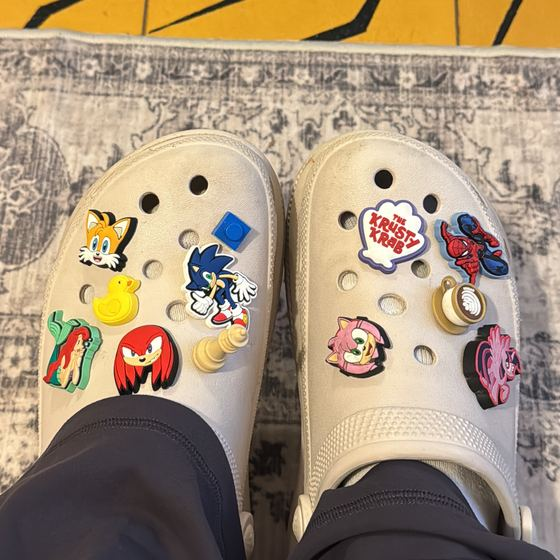

אני יעל חזם, סטודנטית שנה ג׳ להנדסת תוכנה בשנקר בהתמחות הנדסת בינה מלאכותית, ומוכרת בקרוקס. מגישה למשרת מפתחת אוטומציה ואינטגרציות בקבוצת תמוז.
I’m Yael Hazam, a third-year Software Engineering student at Shenkar specializing in AI engineering, and a sales associate at Crocs. Applying for Automation & Integrations Developer at Tammuz Group.
הג׳יביטס שלי. גררו אותם לחורים.My Jibbitz. Drag them into the holes.

הקרוקס שליMy Crocsזאת אניThat’s me
קצת עלייAbout me
למדתי הנדסאי תוכנה בשנקר וסיימתי בהצטיינות. רציתי להמשיך ולהרחיב את הידע, אז המשכתי לתואר בהנדסת תוכנה. אני אוהבת לפתור בעיות ולהבין איך מערכות עובדות ברמה הבסיסית. אני אוהבת לעבוד וללמוד דברים חדשים, לומדת מהר ומביאה אתגרים עד הסוף. אפשר לסמוך עליי בצוות, ואני משקיעה כדי להגיע לפתרונות ברורים ומסודרים.
I studied software engineering at Shenkar’s practical engineering program and graduated with distinction. I wanted to keep going and expand my knowledge, so I continued to a B.Sc. in Software Engineering. I love solving problems and understanding how systems work at a fundamental level. I love working and learning new things, I learn fast and I see challenges through to the end. I’m reliable on a team, and I put in the effort to produce clear, well-structured solutions.
ממוצעGPA93.0הנדסאית תוכנה בהצטיינות, שנקרPractical Engineer with Distinction, Shenkar
הציון הכי גבוהTop grade96מבני נתונים ו-OOPData Structures and OOP
2019–2021חיל היםIsraeli Navyמפעילת מרכז שליטה. ניטור נתונים והתראות בזמן אמת, בלחץ זמן ולפי נהלים מדויקים.Control Center Operator. Monitored real-time data and alerts under time pressure and strict procedures.
מאוקטובר 2026Since Oct 2026Crocsמוכרת בסנטר, קבוצת תמוז. התחלתי לפני שלושה שבועות.Sales associate at the Center store, Tammuz Group. Started three weeks ago.
2017URJ Eisner Campמדריכה בארה״ב, בסביבה רב-תרבותית דוברת אנגלית.Summer counselor in the USA, in a multicultural, English-speaking environment.
איזו מידה? איזה דגם?Which size? Which model?
הכלי שהייתי רוצה לבנות לקרוקס. זו גרסה ראשונה על נתונים מהאתר של WeShoes. נסו אותה.
The tool I’d like to build for Crocs. This is a first version on data from the WeShoes site. Try it.
12 דגמים למבוגרים מתוך 677 מוצרי קרוקס ב-WeShoes, כפי שהופיעו ב-5.11.2026, במחיר מחירון וללא מלאי חי. סוג ההתאמה ל-Classic, לדגם המרופד ול-Flip מבוסס על מדריכי מידות. בשאר הדגמים הוא הערכה, מסומן ״משוער״, והוא הדבר הראשון שהייתי מאמתת מול נתוני החברה.
12 adult models out of 677 Crocs products on WeShoes, as listed on Nov 5, 2026, at list price and without live stock. The fit type for Classic, Lined and Flip comes from size guides. For the others it’s an estimate, marked “estimated”, and it’s the first thing I’d verify against company data.
אותה תשובה, שני ראשיםSame answer, two heads
מצד אחד התשובה של הכלי כ-JSON, מהצד השני פוסטר של קבוצת תמוז שנוצר ממנה. שנו את הבחירות למעלה או ערכו כאן ערך, והפוסטר ישתנה. נסו לשנות את "brand" ל-HOKA או ל-Blundstone.
On one side, the tool’s answer as JSON. On the other, a Tammuz Group poster generated from it. Change the choices above or edit a value here, and the poster follows. Try changing "brand" to HOKA or Blundstone.
POST /api/fit → 200
אותו JSON תמיד נותן אותו פוסטר.The same JSON always gives the same poster.
ככה הייתי בונה את זהHow I’d build it
מאב-טיפוס בדף אחד לכלי שעובד באתר ובסניף.
From a one-page prototype to a tool that works on the site and in the store.
מושכים את הקטלוגPull the catalog
כל מוצרי הקרוקס, דרך ה-API של מערכת המסחר. עד שיש גישה, אפשר להתחיל מהעמודים הציבוריים.
All Crocs products, through the commerce system’s API. Until there’s access, the public pages are a starting point.
מנקים את הנתוניםClean the data
מאחדים צבעים תחת דגם אחד לפי קוד ה-SKU, ומפרידים מידה ומלאי לשדות משלהם.
Group colors under one model by SKU code, and split size and stock into their own fields.
כותבים כללי התאמהWrite fit rules
טבלת המידות וסוג ההתאמה של כל דגם הופכים לכללים שקל לבדוק בטסטים, כמו בדוגמה למעלה.
The size chart and each model’s fit type become rules that are easy to test, as in the demo above.
מוסיפים שכבת AIAdd an AI layer
לקוח כותב במילים שלו: ״רגל רחבה ועומדת כל היום״. המודל מתרגם לפרמטרים, והכללים קובעים את המידה, כך שהוא לא ממציא מידה או דגם.
A customer writes in their own words: “wide feet, on my feet all day.” The model turns that into parameters and the rules set the size, so it can’t invent a size or a model.
מחברים לערוציםConnect the channels
שירות Node.js ו-Express שמשרת ווידג׳ט באתר ומסך למוכרות בסניף, עם מלאי חי.
A Node.js and Express service behind a widget on the site and a screen for store staff, with live stock.
מודדים ומשפריםMeasure and improve
משווים החזרות בגלל מידה לפני ואחרי, ומשתמשים בהן כדי לדייק את הכללים של כל דגם.
Compare size-related returns before and after, and use them to tune each model’s rules.
מה כבר למדתי מהנתוניםWhat the data has already taught me
אותו דגם מופיע בכמה כתיבים: ״קלאסים״ ו״קלאסיים״, ״נעלי קרוקס״ ו״כפכפי קרוקס״. לכן אקבץ לפי קוד דגם, לא לפי כותרת.
ב-SKU 203591-060-M10W12 מופיעה מידת ה-US, ולפי הטבלה M10 W12 היא 43-44. זה מחבר בין הקטלוג לטבלה. ב-Classic השחור הפורמט אחר (10001-001-005), אז צריך גם מיפוי.
בעמוד ה-Classic השחור, 40-41 ו-44-45 מופיעות רק בפרטי המוצר, ו-48-49 עד 52-53 רק בבורר המידות. המקור הקובע צריך להיות נתוני המלאי.
בעמודי המוצר שבדקתי אין שדה של סוג התאמה, מעבר לקישור למדריך המידות. זה השדה הראשון שהייתי מוסיפה.
בעמודי המוצר כבר יש בדיקת מלאי בסניפים, אז הנתון קיים וצריך רק להתחבר אליו.
The same model appears under several spellings and product words in its Hebrew title. So I’d group by model code, not by title.
SKU 203591-060-M10W12 contains the US size, and the chart maps M10 W12 to 43-44. That links the catalog to the chart. The black Classic uses another format (10001-001-005), so a mapping is needed too.
On the black Classic page, 40-41 and 44-45 appear only in the product details, while 48-49 to 52-53 appear only in the size selector. Stock data should be the source of truth.
The product pages I checked have no fit-type field beyond a link to the size guide. That’s the first field I’d add.
Product pages already offer a store stock check, so the data exists and the tool only needs to connect to it.
דברים שבניתיThings I’ve built
פלטפורמת התנדבותVolunteering platform
HandsOn
יצרתי במלחמה פלטפורמה שמחברת בין אנשים שרוצים להתנדב לבין עמותות, עסקים ואנשים שמחפשים מתנדבים. כמה משתמשים או התאמות היו
During the war I created a platform connecting people who want to volunteer with nonprofits, businesses and individuals looking for volunteers. How many users or matches
טכנולוגיות וקישורStack and linkפלטפורמת מפגשים, בשלבי סיוםMeetup platform, nearly finished
eatNmeet
פלטפורמה למפגשים סביב אוכל: לאירועים, להכרויות ולאנשים שאוהבים אוכל.
A platform for meetups around food: for events, for meeting new people and for anyone who loves food.
טכנולוגיות וקישורStack and link
לימודים וכליםStudies and skills
לימודיםEducation
B.Sc. הנדסת תוכנה, שנקרB.Sc. Software Engineering, Shenkar
שנה ג׳, התמחות בהנדסת בינה מלאכותית. OOP: 90, OOAD: 86
Third year, AI engineering specialization. OOP: 90, OOAD: 86
2024–2028
הנדסאית הנדסת תוכנה בהצטיינות, שנקרPractical Engineer, Software Engineering, with Distinction, Shenkar
מבני נתונים ו-OOP: 96, אלגוריתמים ותכנות ב-C#: 88
Data Structures and OOP: 96, Algorithms and Programming in C#: 88